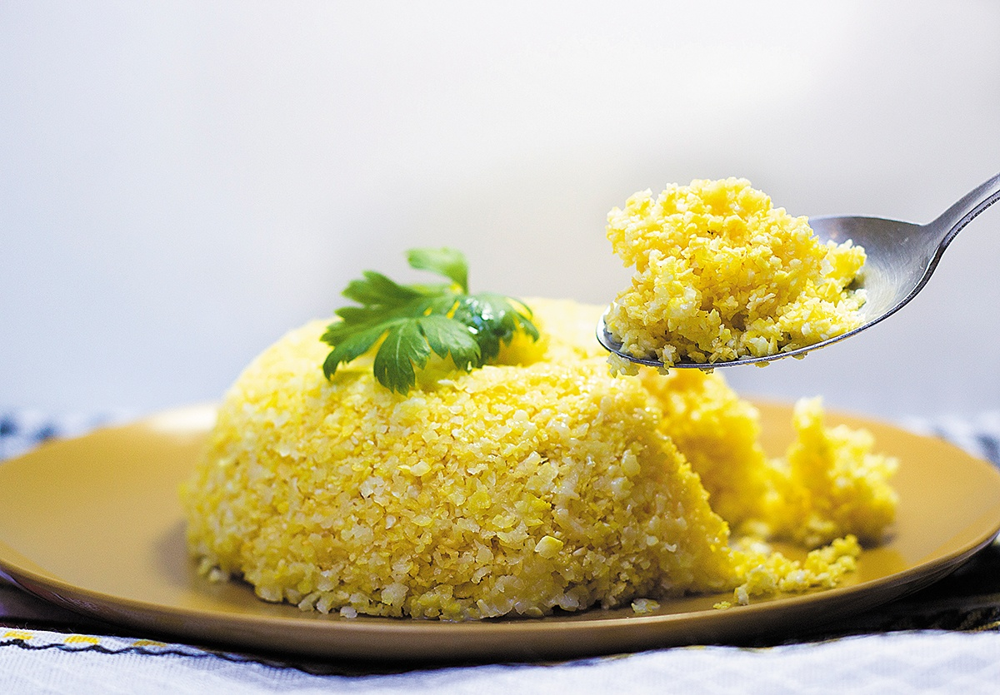

Cuscuz de Milho

Description
Cuscuz de Milho is a traditional Northeast Brazilian dish made with cornmeal and a variety of vegetables
and meats. It is usually steamed and served in slices.
Ingredients
- 2 cups of cornmeal
- 1 onion
- 2 cloves of garlic
- 2 tomatoes
- 2 green bell peppers
- 100g of bacon
- 100g of sausage
- 2 cups of water
- Salt to taste
- Olive oil
Instructions
- Finely chop the onion, garlic, tomatoes, and bell peppers.
- Cut the bacon and sausage into small pieces.
- In a pan, sauté the onion and garlic in olive oil until they are soft.
- Add the tomatoes, bell peppers, bacon, and sausage to the pan and cook for a few minutes.
- In a separate bowl, mix the cornmeal with water and salt to form a moist dough.
- Grease a cuscuz mold or a heatproof bowl with olive oil and place a layer of the vegetable and meat mixture on the bottom.
- Add a layer of the cornmeal dough on top of the vegetables and meat.
- Repeat the layers until all the ingredients are used up.
- Cover the mold or bowl with aluminum foil and steam it for 30-40 minutes.
- Once the cuscuz is cooked, remove it from the mold or bowl and slice it into portions.
- Serve the cuscuz de milho warm or at room temperature.